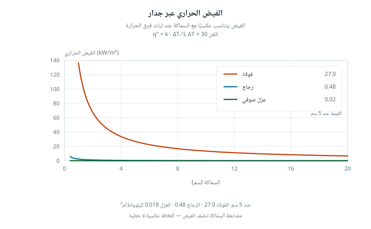

الحرارة
Heat
انتقال طاقة حرارية عبر فرق في درجة الحرارة، أو عبر فرق كمون كيميائي في تحوّل طوري. ليست خاصية يملكها الجسم بل عملية عابرة تُقاس بالجول وتُنسب إلى مسار، ويحدّد معدّل عبورها التوصيليةُ والمساحة وفرق الحرارة مقسومًا على السماكة.
الحرارة ليست شيئًا في الجسم، بل طاقة في الطريق. تنتقل من النظام الأعلى حرارة إلى الأدنى، وتحملها ثلاث آليات: التوصيل في الأجسام الصلبة والملامسة، والحمل بحركة المائع، والإشعاع بالفوتونات الذي لا يحتاج وسطًا. لذلك تُكتب الحرارة Q بالجول، وتُنسب إلى المسار: مقدارها يعتمد على الطريق لا على الحالتين الابتدائية والنهائية وحدهما، بخلاف الطاقة الداخلية U.
في الجدار المستوي المستقر يكون معدّل العبور ثابتًا في كل مقطع، وهو الفيض q″ بوحدة واط لكل متر مربع: q″ = k·ΔT ⁄ L بقانون فورييه. مضاعفة السماكة تنصّف الفيض، ومضاعفة فرق الحرارة تضاعفه، أما تغيير المادة فيغيّر المرتبة كلها: الفولاذ ينقل نحو 45 واط/م·كلفن، والعزل الصوفي نحو 0.03، أي فرق ألف وخمسمئة ضعف عند سماكة واحدة.
كيف تعمل الظاهرة؟
في الصلب تنقل الحرارةَ إلكتروناتُ التوصيل أساسًا، وهي تحمل الشحنة والحرارة معًا، لذلك ترتبط التوصيلية الكهربائية بالحرارية في قانون فيدمان–فرانز. في العوازل والزجاج تنقلها الاهتزازات الشبكية (فونونات) فتكون التوصيلية أدنى بمراتب. في الغازات تنقلها تصادمات الجزيئات مباشرة، ولذلك تكون التوصيلية نحو 0.026 واط/م·كلفن وتزيد قليلًا مع الحرارة. الفيض الثابت شرطُ الحالة المستقرة: ما يدخل مقطعًا يخرج من التالي، وإلا تغيّرت طاقة الجدار فرتفعت حرارته.
العلاقة بالأرقام
لفولاذ k = 45 واط/م·كلفن وفرق حراري 30 كلفن عبر جدار 5 سم: q″ = 45×30 ⁄ 0.05 = 27,000 واط/م² أي 27 كيلوواط/م². وللعزل الصوفي نفسه k = 0.03: q″ = 18 واط/م²، فلا يمرّ إلا 0.018 كيلوواط/م². وللزجاج k = 0.8: q″ = 480 واط/م². المقاومة الحرارية للجدار R = L ⁄ k بوحدة m²·K/W، فتصير 0.0011 للفولاذ و1.67 للعزل عند 5 سم — ولذلك تُقاس جودة الجدار بالمقاومة لا بالسماكة.
مفاهيم متقاربة
الحرارة ليست درجة الحرارة: الأولى طاقة عابرة بالجول وتُسند إلى مسار، والثانية حالة مكثّفة بالكلفن تُقاس عند نقطة. والحرارة ليست الطاقة الحرارية المخزونة: عود ثقاب أعلى حرارةً من صفيحة فولاذية باردة، لكن الصفيحة تحتوي طاقة داخلية أكبر بمراتب. والقانون الأول يفرّق بينهما جمعًا: dU = δQ − δW، فالحرارة حدٌّ في معادلة الطاقة لا مخزونها، ولهذا لا يُقال «للجسم حرارة 300 جول» بل «دخلته حرارة 300 جول».
حدود التطبيق
قانون فورييه يفترض وسطًا مستمرًّا، فيفقد معناه عند أطوال مقاربة لمسافة تخلخل الفونونات، أي في الأغشية النانوية حيث تنخفض التوصيلية الفعلية. وفي التوصيل غير المستقر يصبح الفيض دالة زمن عبر الانتشارية الحرارية α = k ⁄ (ρ·c_p)، فلا يكفي الجدار قيمةً ثابتة. وفي المائعات المتحرّكة يختلط التوصيل بالحمل فتُستبدل k بمعامل انتقال حراري h يعتمد على السرعة والهندسة. ولا تنطبق الصيغة في الأجسام الشفافة حيث يسود الإشعاع ويصير العبور دالّة على معاملات الإصدار.

| الكمية | القيمة | المصدر |
|---|---|---|
| توصيلية الفولاذ الحراري | 45 واط/م·كلفن | [1] |
| توصيلية العزل الصوفي | 0.03 واط/م·كلفن | [1] |
| الفيض عبر جدار فولاذي 5 سم عند ΔT = 30 K | 27 كيلوواط/م² | [2] |
| مقاومة الجدار الحراري R = L ⁄ k | 0.0011 م²·كلفن/واط | [2] |
المصادر
- 1 Thermal conductivity of common materials — The Engineering ToolBox. www.engineeringtoolbox.com/thermal-conductivity-d_429.html · اطُّلع عليه 2026-11-16
- 2 Heat transfer — conduction, Fourier law — HyperPhysics, Georgia State University. hyperphysics.phy-astr.gsu.edu/hbase/thermo/heat.html · اطُّلع عليه 2026-11-16
- 3 Heat — Encyclopaedia Britannica. www.britannica.com/science/heat · اطُّلع عليه 2026-11-16
استشهد بهذا المصطلح
الصيغتان مبنيتان من بيانات الصفحة نفسها: العنوان والتاريخ ورابط النسخة المنشورة.
الحرارة — Heat. (2026). ديوان المعرفة — انفراد. https://infiradev.com/diwan/terms/heat.html
@misc{heat2026,
title = {الحرارة},
titleaddon = {Heat},
howpublished = {{ديوان المعرفة — انفراد} — مرجع علمي عربي},
year = {2026},
url = {https://infiradev.com/diwan/terms/heat.html},
urldate = {2026-11-16},
note = {مراجعة علمية: تحرير انفراد الآلي — نُشر بأمر عبدالله الهويدي}
}
راجعه: تحرير انفراد الآلي — نُشر بأمر عبدالله الهويدي · 2026-11-16 · آخر تحديث 2026-11-16